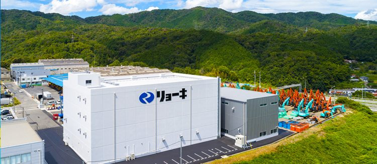
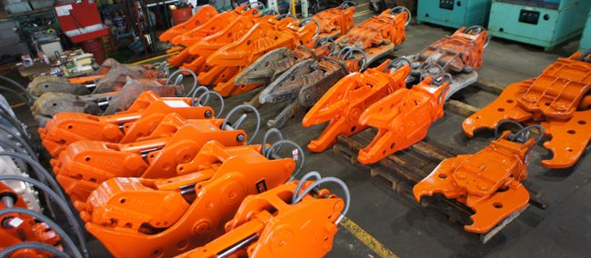
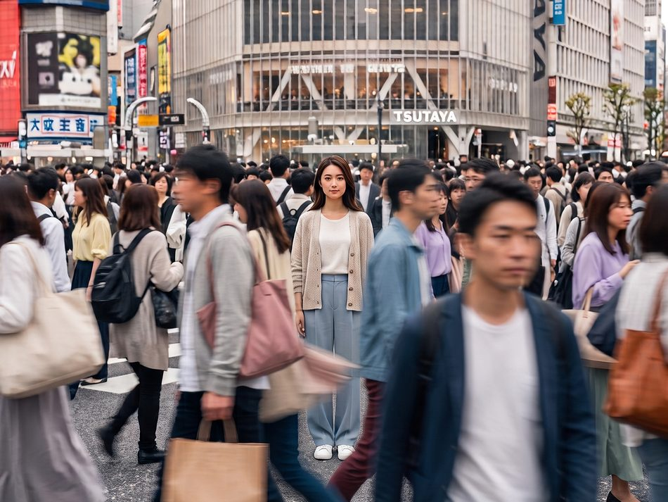
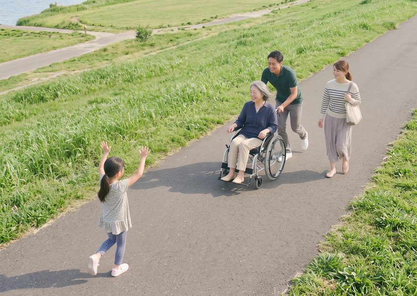
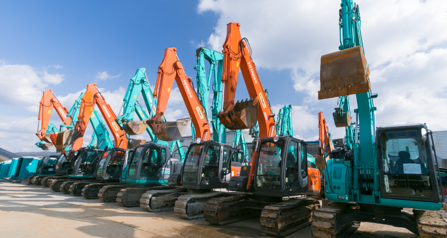
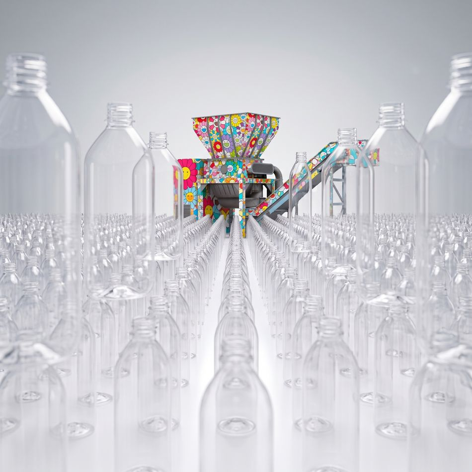
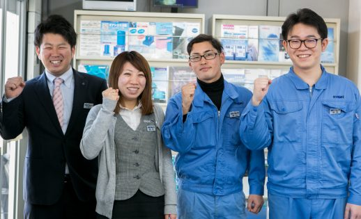
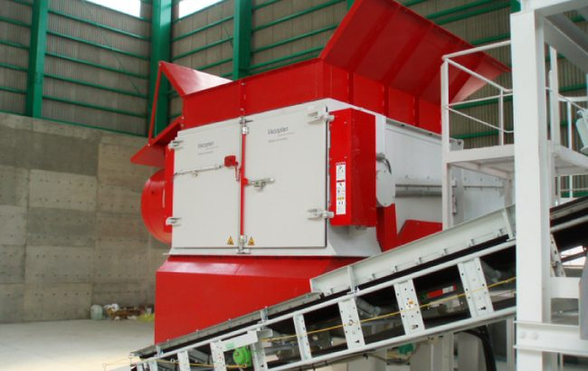
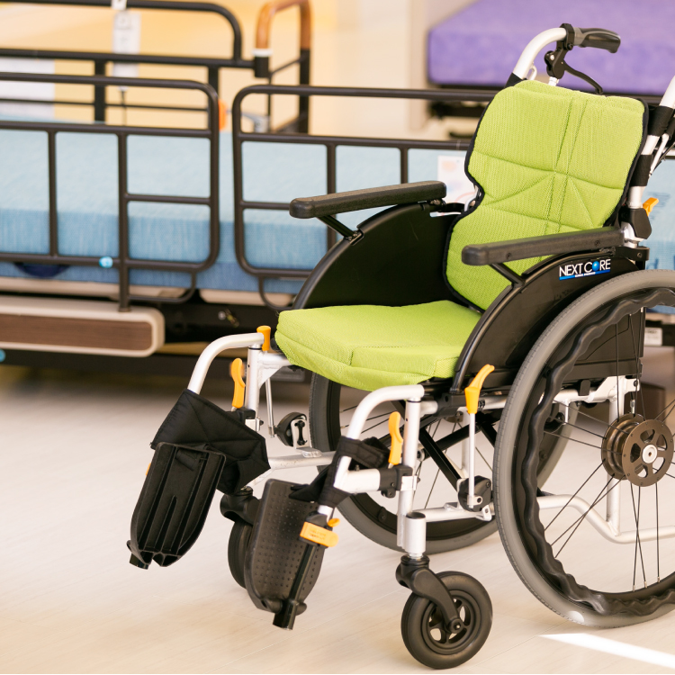
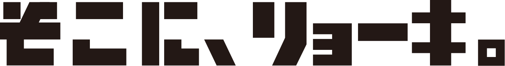
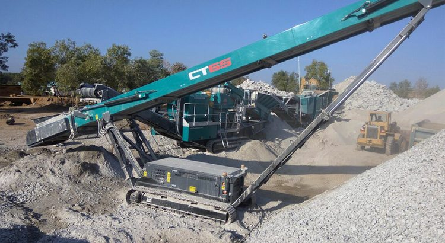
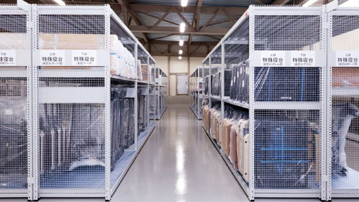
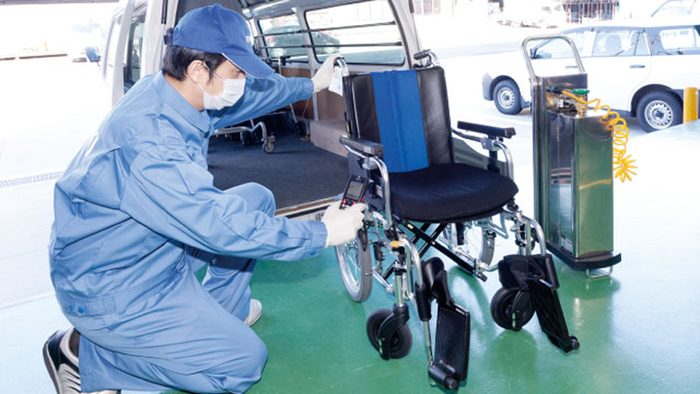
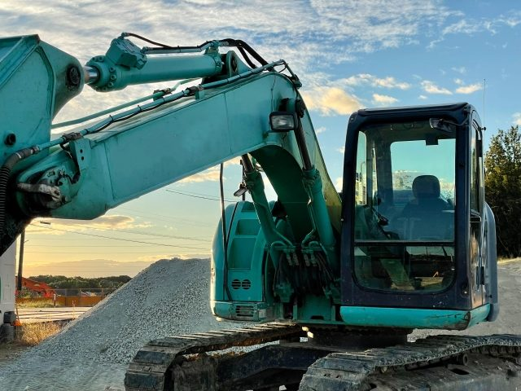
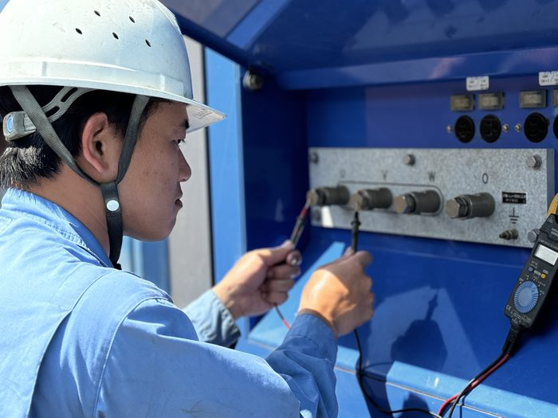
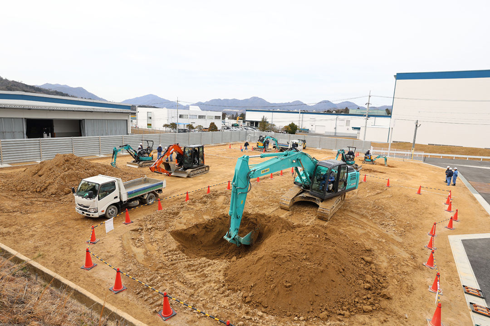
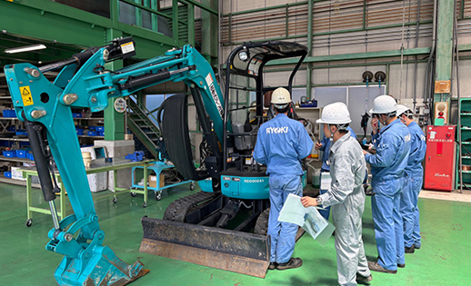
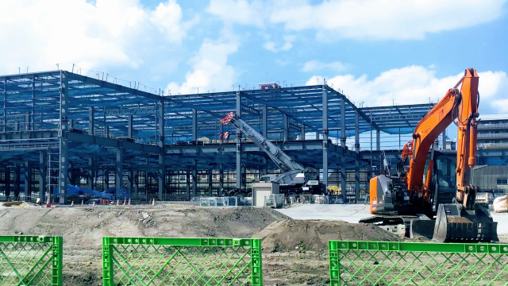
リョーキって何の会社？
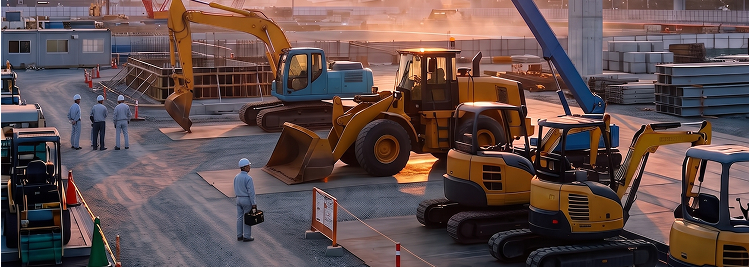
リョーキ＝建設？
あなたは、そんな印象を持ったかもしれません。
その印象は、間違っていません。
リョーキは、建設機械のレンタル事業を通じて、
街が動き出す、その「現場」に関わっています。
道を拓き、営みをつくり、
人が集まり、新しい日常が始まっていくために。
リョーキが支えているのは、
機械そのものだけではなく、
人が働き、街が動き出す、
その現場なのです。
さあ、街よ、動け。
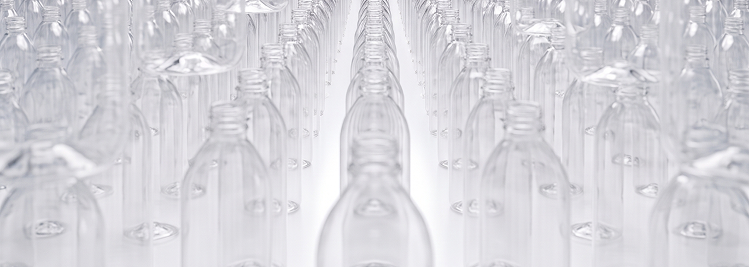
リョーキ＝環境？
あなたは、そんな印象を持ったかもしれません。
その印象は、間違っていません。
リョーキは、環境機器を通じて、
循環が生まれる、その「変化」に関わっています。
使われたものが、次の価値へ向かう。
素材が変わり、新しい循環が始まっていく。
リョーキが支えているのは、
環境機器そのものだけではなく、
素材が循環し次の価値へ生まれていく、
その変化なのです。
さあ、循環を生みだそう。
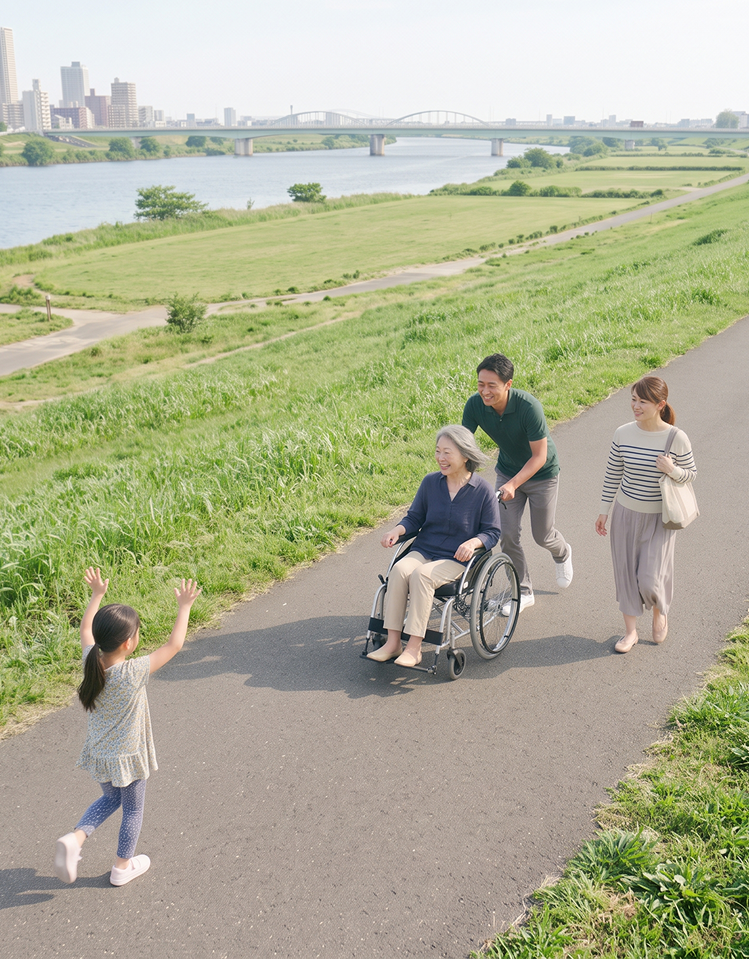
リョーキ＝福祉？
あなたは、そんな印象を持ったかもしれません。
その印象は、間違っていません。
リョーキは、福祉用具のレンタル事業を通じて、
毎日が前へ進む、その「瞬間」に関わっています。
行ってみたい場所がある。会いたい人がいる。
もう少し、自分の力で前へ進みたい。
福祉用具という支えがあることで、
暮らしは少しずつ動き始めます。
リョーキが支えているのは、
福祉用具そのものだけではなく、
人の暮らしと心が、前へ進んでいく、
その瞬間なのです。
さあ、心よ、前を向け。
必要なところ に、
リョーキがいる。
事業は違っていても、
リョーキが関わっている場面には、共通するものがあります。
何かが動き出そうとしているところ。
建設機器レンタル事業
何かが生まれ変わろうとしているところ。
環境機器事業
誰かの暮らしが前へ進もうとしているところ。
福祉用具レンタル事業
社会や人の「必要」に応え、
見えないところから、その動きを支えている。
それが、リョーキです。
リョーキという会社を、
人にたとえると
こんな感じです。
目立ちたがりではない。
でも、必要とされたら、ちゃんと動く。
派手ではない。
でも、できることを考える。
困っている人がいたら、
つい手を貸したくなる。
誰かの役に立つことを、
いつも、大切にしている。
たぶん、まじめで、少し世話焼き。
そんな性格の会社です。
もし、リョーキで働くとしたら。
「リョーキ」という名前が少し気になったあなたへ。
自分が、何を支える仕事をするのか。
誰の役に立つ仕事をするのか。
どんな姿勢で働くのか。
リョーキには、
建設・環境・福祉というフィールドがあります。
けれど、そのどこにいても、
誰かの「必要」に応える仕事があります。
あなたの「そこ」はどこだろう。
街が動き出す、その現場。
循環が生まれる、その変化。
毎日が前に進む、その瞬間。
そのひとつひとつを、
支えている人たちがいます。
どんな仕事があるのか。
どんな人が働いているのか。
どんな毎日が待っているのか。
ここから先は、
もっと具体的なリョーキを見てみてください。